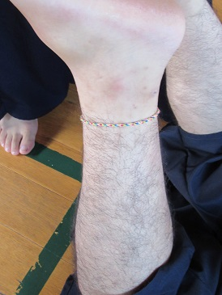
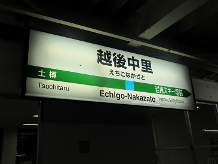

|
[2016年夏合宿]
８月２３日から行われた夏合宿の様子をお伝えします。３日目です！ 篠崎おはよう。副務の作るジャグのスポドリはとてもおいしいです。 大石（５５）もおはよう。う〜ん、広報冥利。 昨日到着の二人も本日より稽古参加です！ サービス精神旺盛な第三副将。 とうとう小池（５５）に嫌われたようです…つら。 一男’sもどこかお疲れのご様子。 空はとっても青いのに。 桑原（５５）掃除お疲れさま。 本日もストレッチから。（写真はイメージです。） されるがままの勝間田（５４）。 まーーーーーた持田だよ 
き、きたない… 死んでる。 何をしていいのかわかってなさそうな一女’s。  井上（５４）の足にミサンガ発見。こ〜れは粗相ですね。 ま、まじめにやってください（震え声） 「剣道日本９月号・特集 注目の剣士」的ショット。 本日は第一副将・須合が指揮を執ります。 木刀による剣道基本技なんたら…。とにかく形をやりました。 ラストは途中参加者への洗礼。通称ジグザグ。全参加でよかった。 
お疲れ様でした。 お前は前向けや。 お昼は定番のカレー。主将盛りはなんだか美的センスを疑う事態に。 午後は一二年生で学年別行動へ、いってらっしゃーい！ 
旅館では幹部の女将たちがお見送り。（一番奥が大女将） 学年別行動はこちらへ！ 夕方、学年別行動の途中で帰京する一年生をお見送りしました。 見送りから帰ってきたら八塚（５５）が来てた。  そろそろみんな帰ってきます。出迎えに最寄り駅へ。 あ、帰ってきた。 みんなだいたいこんな感じでしたが… こいつは違った。 ちなみに幹部の一部は同時刻にバレーしてました。くさそう。 道場には珍客が。うちらも違った意味でゲロゲィロ。 おかえり！ 大西もカメラを捉え始めた… 今日から参加の竹内（５５）。早速喋る内容をド忘れするミスでスミス。 佐藤（５５）も本日から。………ドカ――――ンッ。 
勝間田（５４）とあほ面する水谷（５５）。 
こわ〜い。 つまらなそうな上本（５３） 今回も信者を集めた坂本（５３）が帰京します。 夜は花火でキラキラ大学生になりきりました！ きーみーがーいたなーつーは とおいーゆーめーのなかーあー そーらーにーきえてーえーたー 影絵！ たのしそ！おやすみ！ 終わらない…。４日目に続きます！ (※写真へのコメントは全て管理人がしております。) |